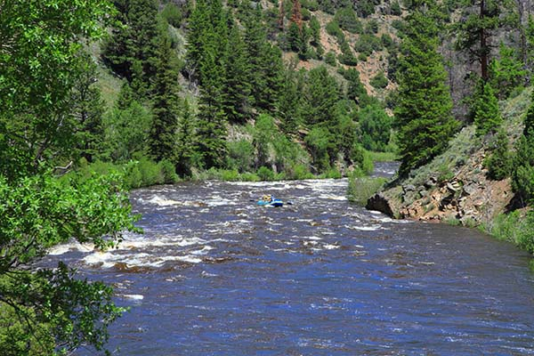
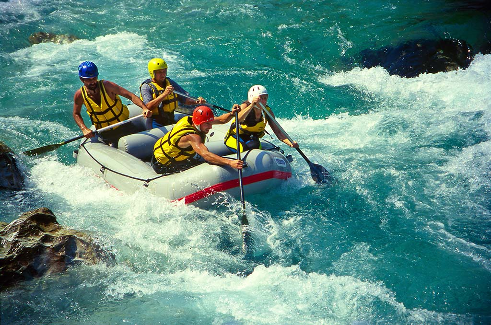

Have An Adventure
Make Memories with Dry Oar

Rafting and whitewater rafting are outdoor entertainment activities that use a boat or an unsinkable raft. It has different difficulty levels according to the current of the water in which the sport is done. It can be done solo but is more commonly done with groups and needs good teamwork to manage the water. River rafting, canoeing and whitewater rafting are the most preferred styles of this sport..

Rafting and whitewater rafting are outdoor entertainment activities that use a boat or an unsinkable raft. It has different difficulty levels according to the current of the water in which the sport is done. It can be done solo but is more commonly done with groups and needs good teamwork to manage the water. River rafting, canoeing and whitewater rafting are the most preferred styles of this sport.